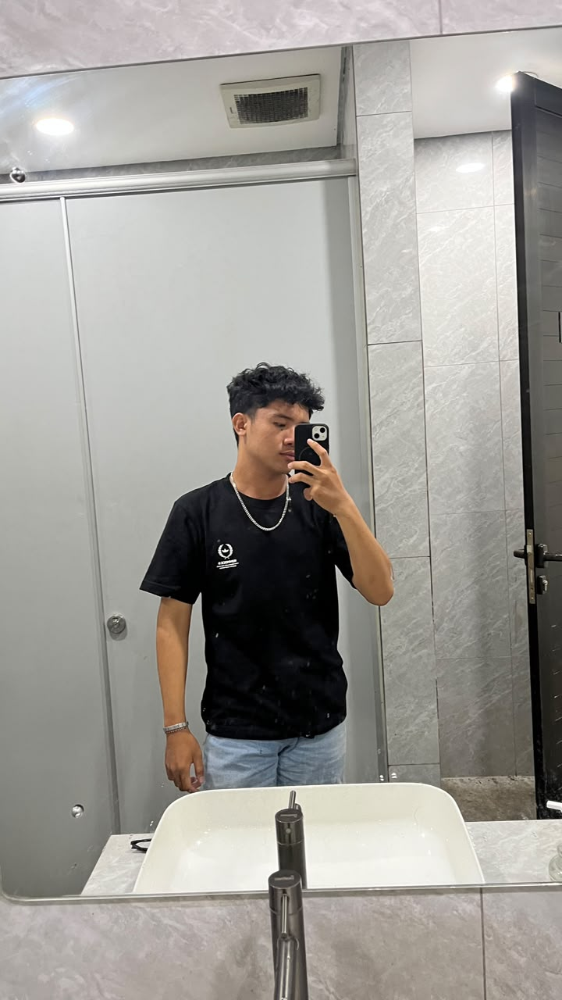

Universitas Pakuan Bogor
Ilmu Komputer · Semester 5
TERBUKA UNTUK BELAJAR & BERKOLABORASI
Mahasiswa Ilmu Komputer | Aspiring Software Developer
Fokus saya: Computer Science Student
Saya adalah mahasiswa Ilmu Komputer di Universitas Pakuan Bogor yang tertarik pada pengembangan perangkat lunak, web development, aplikasi mobile, dan teknologi Internet of Things. Saya terus mengembangkan kemampuan melalui pembelajaran dan pengerjaan berbagai proyek.

Depok, Indonesia01 — TENTANG SAYA
Saya mahasiswa Ilmu Komputer yang tertarik pada teknologi, pemrograman, pengembangan aplikasi, dan perangkat Internet of Things. Saat ini saya terus belajar dan mengasah kemampuan melalui proyek akademik maupun eksplorasi mandiri.
Saya percaya proses belajar terbaik terjadi saat rasa ingin tahu bertemu dengan praktik. Setiap proyek adalah kesempatan untuk mencoba, mengevaluasi, dan berkembang.
TERUS BERTUMBUH, SATU PROYEK SEKALIGUS02 — PENDIDIKAN
Bekal untuk memahami teknologi dan membangun solusi yang berguna.
Ilmu Komputer · Semester 5
03 — KEAHLIAN
Daftar yang terus berkembang seiring proses belajar dan pengerjaan proyek.
04 — PROYEK PILIHAN
Beberapa proyek akademik dan eksplorasi yang sedang atau telah saya kerjakan.
Proyek website pembelajaran.
Website kantin untuk proyek pengembangan aplikasi.
Website resep makanan dengan fitur penjelajahan resep dan pengelolaan data.
Konsep pemantauan dan efisiensi energi ruang kelas menggunakan ESP32.
Proyek pemantauan kekeruhan air menggunakan sensor dan mikrokontroler.
Proyek pemantauan kualitas udara menggunakan sensor dan mikrokontroler.
05 — KONTAK
Selalu terbuka untuk bertukar ide, belajar bersama, dan berkolaborasi dalam proyek menarik.
Temukan saya melalui GitHub dan lihat apa yang sedang saya pelajari.
Lihat GitHub